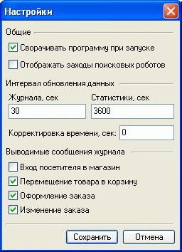

Из главного окна Melbis Shop Agent выбором пункта меню "Настройки" можно перейти к окну настроек агента. Настройки сводятся к указанию, сворачивать ли в трей программу при старте, отображать ли заходы поисковых роботов, заданию временных интервалов обновления данных, а также указанию, о каких событиях следует сообщать всплывающей подсказкой в случае, если окно агента свернуто в трей.
Помимо того, в настройках агента может быть задан сдвиг времени компьютера от времени на сервере. Следует учесть, что корректировка редко превышает 120 секунд. В случае значительного расхождения следует проверить правильность установки часового пояса в "Установки магазина на сервере"
